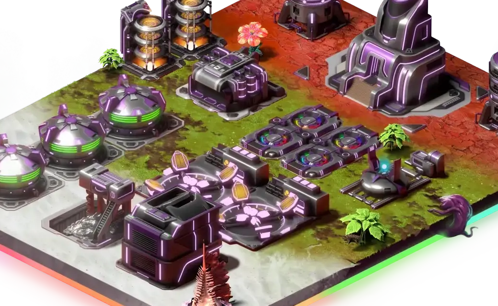

Um novo começo!
Illuvium é o seu novo lar. Você acordou e quando abriu os olhos, tudo estava diferente. Existem regras? É seguro ficar aqui? Descubra enquanto explora esse novo mundo...
Um dia de cada vez...
Após a queda da nave, algumas escolhas precisam ser feitas Essas escolhas podem ser uma benção ou uma maldição Se prepare para o combate Sobreviva e volte para contar a sua história
A derrota pode ser dolorosa Mas não existe nada mais recompensador do que a vitória a não ser toneladas de Ether.
- Todos precisam ser guerreiros? - Não! Alguns querem apenas plantas seus tomates
